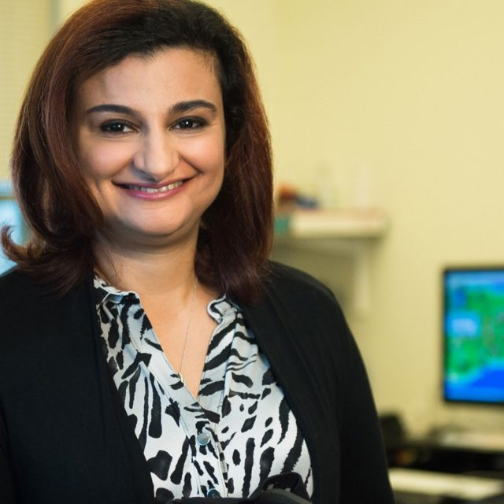

Research Team
Authors
Authors
-
Shivam Shukla *
HCI Researcher
University of California, Santa Cruz
-
Jihye Kim *
NLP Researcher
University of California, Santa Cruz
-

Shubham Gaur *
NLP Researcher
University of California, Santa Cruz
-
Mahnaz Roshanaei
Computational Social Scientist
Stanford University
-

Magy Seif El-Nasr
Advisor
University of California, Santa Cruz
* Equal contribution
Acknowledgments
We thank the members of the Computational Media Department, the NLP Group, and the GUII Lab at UC Santa Cruz for their support and encouragement throughout this work, and Yijia Shao of the SALT Lab at Stanford University for her insightful feedback and continued support.
Questions about RELATE? Write to Shivam Shukla or open an issue on GitHub.